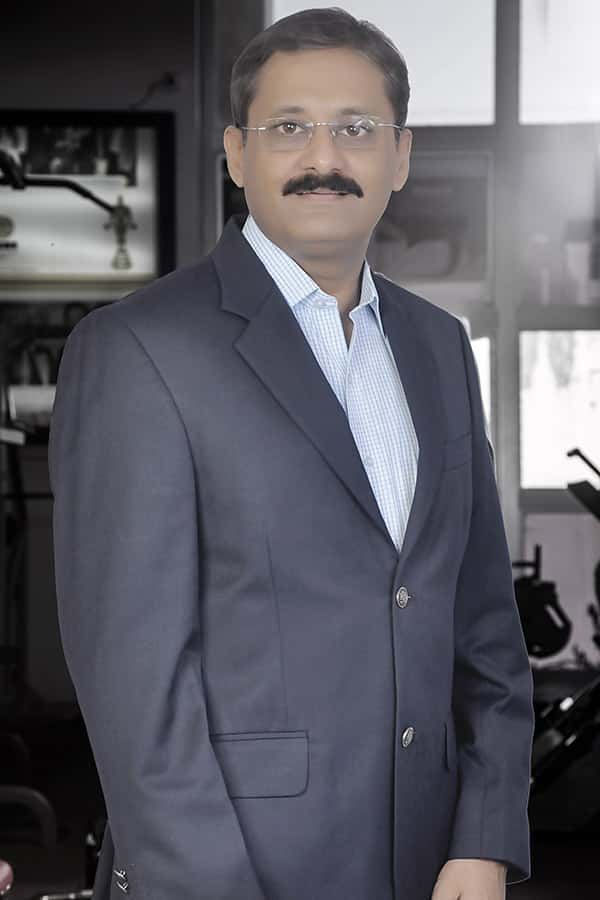

He is the prime mover in bringing our GYM to India with a mission for GOLD”S GYM – “When Indians think of Fitness, they think of GOLD”S GYM”. He is a keen sports enthusiast with special interests in water sports like skiing, kayaking, rafting and scuba diving. He cherishes the dream of making infrastructure for every indian and also making fitness a way of life for all.
He is a health and fitness buff and an avid follower of cricket. He does not miss out his regular morning workouts, no matter where he is. He enjoys playing tennis, badminton and table tennis. The concept to provide world-class fitness standards in India was followed up with intense research across the globe culminating in the signing up with the leaders in fitness- GOLD”S GYM.
n his role as franchising head he has taken the brand to a whole new orbit & in the last five years, under his leadership India became the first and the only country outside USA to have more then 130 gyms with a foot print in 90 cities .
A cornerstone of the growth and development at the Valecha Group is Mr. Karan Valecha. With a degree in Business Management, he is involved in the Finance, Business Development, Legal & HR matters at Valecha Engineering limited and plays an important role in the strategic & brand building of Gold’s Gym all across India.
An astute professional in the field of Finance, Accounts, Legal, Human Resources and Implementation of ERP System, Prashant brings in an overall experience of 30 + years to Gold’s Gym, India. He is team a man with inspirational leadership qualities and avid follower of sound & fool-proof systems and processes.
A constant engagement to keep the brand at the forefront as a leader has been the main focus and now spearheads the entire corporate owned gym business of the company. Shraddha is constantly seeking greater challenges and keeps herself fit as part of her passion to be a role model to youngsters in the organisation.
Gold's Gym International, Inc. is an American chain of international co-ed fitness centers (commonly referred to as gyms) originally started by Joe Gold in Venice Beach, California. Our each gym offers a variety of cardio and strength training equipment as well as group exercise programs. Its headquarters have since relocated to Dallas.
They ran the gym for almost two years, and when they realized it was not feasible for them, they were going to close it and reopen the premises as an antiques shop. They offered it to a gym member, Ken Sprague, who purchased it in late 1971, and Gold's was saved as a gym. Sprague was the first owner of Gold's to actually sponsor and hold bodybuilding competitions, and his promotional skills and film industry contacts helped build the establishment's profile.